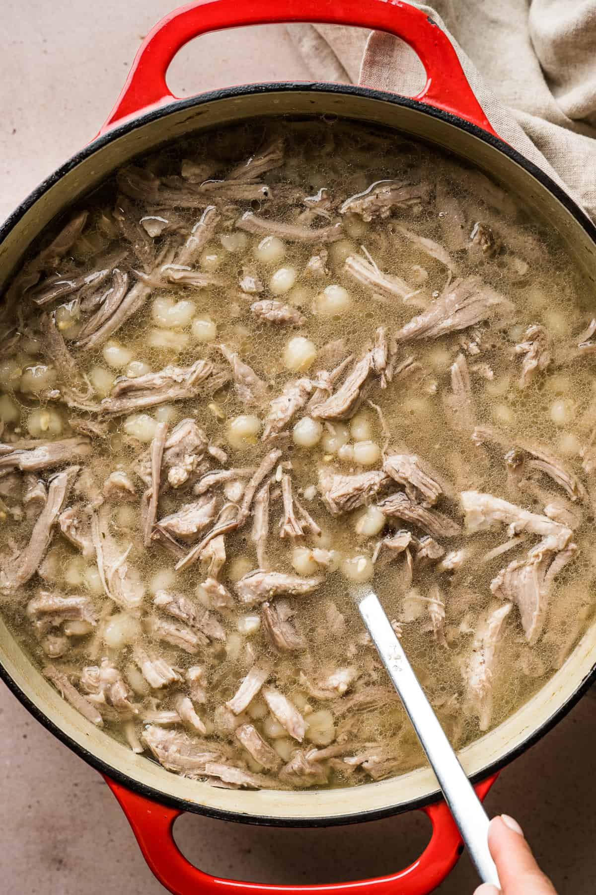

Home
Pozole Blanco

Description
Made with a simple and flavorful broth, tender pork shoulder, hominy, and
topped with cabbage, lime, radishes, and a dash of salsa, this authentic
dish is packed with traditional Mexican flavors.
Ingrediants
- Pork Shoulder
- Hominy
- Bay Leaves
- onions and garlic
- Seasonings: kosher salt, cumin, black pepper, and Mexican oregano
- chicken broth
- Flour for rolling and shaping dough
Steps
-
Place the onion, garlic, bay leaves, salt, cumin, black pepper, Mexican
oregano, and 2 cups of chicken broth in a large blender, and blend until
smooth.
-
In a large pot or Dutch oven, combine the blended onion mixture, pork,
hominy, and the remaining 2 cups of broth. Bring everything to a boil
over high heat, reduce the heat to low, cover, and simmer for 3 hours or
until the pork is fall-apart tender.
-
Remove the pork from the pot and transfer it to a large bowl. Shred it
with a fork, then transfer it back into the pot.
- Serve the pozole in bowls